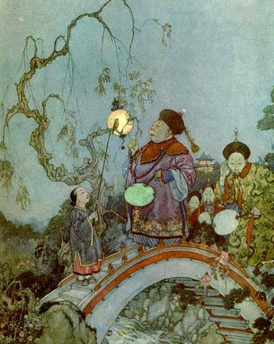
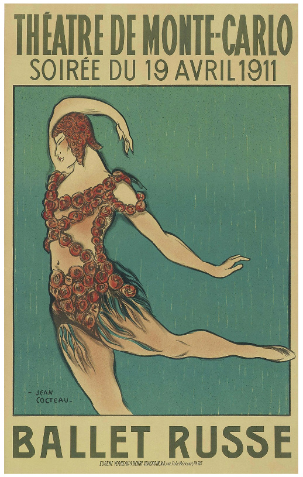

Gallery
 
Left - A watercolor book illustration from 1911 | Center - A poster for a ballet from 1911 | Right - Charlie Chaplin, silent movie actor
People in the 1910s were able to entertain themselves in many different ways.
Common forms of entertainment included art, dancing, music, theater, and silent movies
Art exhibits, especially those rebelling against the National Academy of Design's expectations, would have hundreds to thousands of visitors. Over time, more and more artists would join the rebellions.
Dancing, ballet specifically, developed and grew in popularity during this time. Symphonic music grew as well, and music became available to people through recordings, radio, and orchestras. Additionally, musicals became one of the most popular forms of theater during this decade.
Despite the movie business having existed for longer than a decade, movies would remain silent until the late 1920s. Regardless, silent movies became wildy popular during this decade. Charlie Chaplin, a famous silent movie actor, would rise to fame during this time.
Left - A watercolor book illustration from 1911 | Center - A poster for a ballet from 1911 | Right - Charlie Chaplin, silent movie actor
https://www.encyclopedia.com/social-sciences/culture-magazines/1910s-arts-and-entertainment-topics-news#MOVIES_THE_BUSINESS_THE_STUDIOS_THE_STARS_AND_THE_PICTURES
https://en.wikipedia.org/wiki/Charlie_Chaplin
https://en.wikipedia.org/wiki/Ballets_Russes
https://www.illustrationhistory.org/history/time-periods/the-decade-1910-1920